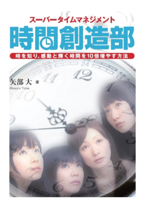
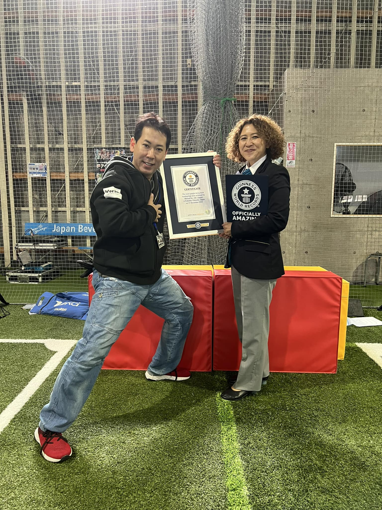
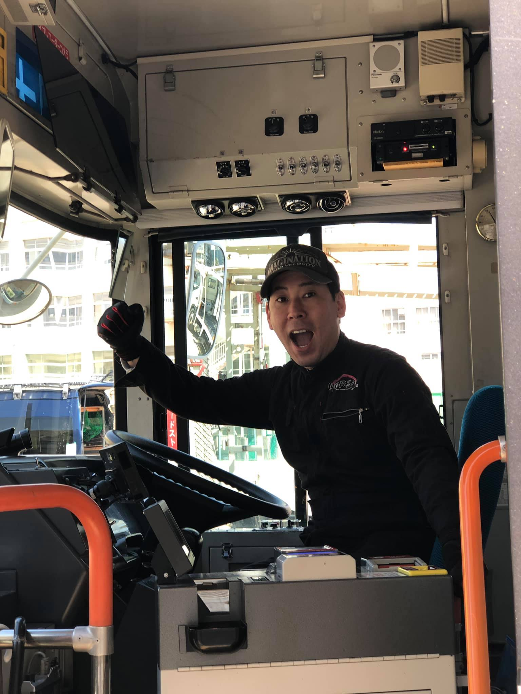
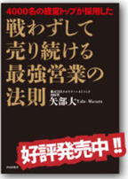
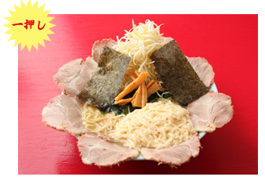
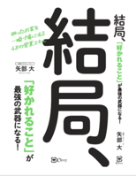

名参謀 ／ 経営コンサルタント
感動マネジメントで
売上の壁を突き破る。
8社・年商15億の実戦経営者。
4,000名の経営トップが採用した「戦わずして売る」哲学。
孤独な経営者の右腕として、あなたの会社の未来を切り拓きます。

矢部 大 MASARU YABE
名参謀 ／ 経営コンサルタント
4,000名の経営トップが採用した「戦わずして売る」哲学。
孤独な経営者の右腕として、あなたの会社の未来を切り拓きます。
Profile
MASARU YABE
矢部 大
私の原点は、日本大学芸術学部演劇学科在学中に飛び込んだジャパンアクションクラブ（JAC）でのスタントマン生活です。「燃え盛る炎の中に飛び込む」「高いビルから飛び降りる」。演じること、命を懸けること——そこには言い訳の通用しない、圧倒的な「現場」がありました。
その後、ビジネスの世界へ。26歳で起業し、気づけば8社を経営、年商15億円まで会社を育てていました。常に「常識の逆」を行く経営を実践してきました。
M&AによるExitを経て、2026年、私は再び「個」になりました。孤独な経営者の皆様の「名参謀」として、私の持つノウハウのすべてをご提供します。
Kandon Management
日大芸術学部で演技を学び、スタントマンとして命を懸け、26歳で起業し8社を経営してわかったこと——
人が本当に動くのは「理論」ではなく「感動」からです。矢部式営業は、相手の感情を動かすことで「戦わずして売る」境地を実現します。
クロージングの前に「感動体験」を設計する。感情が動いた相手は、自ら決断します。演劇・アクションで磨いた「人の感情を動かす力」が、営業の現場で炸裂します。
バク転からギネス、年商15億へ——自分の物語を「武器」にする方法。日大芸術学部で学んだ表現力と経営実績が融合した、唯一無二のストーリーブランディング。
口だけのコンサルとは違います。必要なら一緒に現場に入り、クロージングの瞬間まで並走します。理論ではなく、現場で汗をかく「実戦型」の支援スタイルです。
最新AIで効率化した時間を、感動体験の創出に注ぐ。テクノロジーと人間力を融合した次世代営業組織の構築を、実践レベルで支援します。
Time Management Seminar
ベストセラー『スーパータイムマネジメント』著者が直伝。時間は管理するものではなく、創り出すもの。経営者の最大の資産「時間」の本質を変えるセミナーです。

「忙しい」を卒業する思考法——時間密度を10倍にする具体的メソッド
決断の速度が経営を変える——迷わない判断基準の作り方
コロナ禍で過去最高益——危機を好機に変えた時間戦略の全て
8社同時経営を可能にした「時間創造」の実践メソッドを公開
経営チーム全体の意思決定スピードを劇的に向上させる展開法
Personality
経営戦略を語る「名参謀」としての顔だけでなく、いざという時には体を張る泥臭さも私の持ち味です。この人間的な幅広さが、感動マネジメントの源泉です。


What I Can Do
年商15億を築いた「戦わずして売る」ノウハウ。成果主義・同行営業も対応。成約率を劇的に高めるクロージングの極意を直接伝授・代行します。
「時間を創造する」という経営哲学を組織全体に浸透させる。経営者・幹部向けセミナーで意思決定の質とスピードを根本から変革します。
経営全般・事業承継・M&A・新規事業・人財育成。8社の経営実績で培ったリアルなノウハウを、孤独な経営者の右腕として提供します。
AIによる精度の高いリスト作成・アプローチの自動化など、最新テクノロジーを駆使して「勝てる営業組織」の基盤を構築します。
経営は「タイミング」と「人」がすべて。数千年の知見を用い、攻める時期・引く時期・最適な人材配置を戦略的にアドバイスします。
バク転ギネス記録保持者の圧倒的な実体験から生まれる言葉。経営者団体・業界団体・企業研修など、場の空気を変える講演をお届けします。
Client Voices
「矢部さんは口だけじゃなく、一緒に営業現場に入ってくれた。何度も失注していた大口案件を、矢部さんが同行した翌日に受注できた。感動マネジメントが何なのか、現場で体感しました。」
※ご本人の許可を得て掲載
「理論だけのコンサルに嫌気がさしていた時に矢部さんと出会った。成果報酬型でリスクなく始められ、実際に数字が出た。経営者経験者ならではの『現場感』が営業チームを根本から変えてくれた。」
※ご本人の許可を得て掲載
「飲食の出店計画を相談したら、ご自身でニューヨーク出店まで経験している。失敗も成功も知っている人の言葉は重さが違う。おかげで致命的なミスを未然に防げた。本物の名参謀です。」
※ご本人の許可を得て掲載
「役員全員でタイムマネジメントセミナーを受けた。『時間を守る』ではなく『時間を創造する』という発想転換が経営チームの共通言語になった。意思決定の速度が体感で3倍になっています。」
※ご本人の許可を得て掲載
矢部さんの最大の特徴は、「一緒に汗をかいてくれる」こと。8社を経営し、自ら現場で戦い続けてきた人だから、机上の空論ではなく実戦レベルの話しかしない。成果主義でやってくれるので、経営者として費用対効果に納得して頼める。顧問やコンサルタントに何百万も払って成果ゼロという経験をした方ほど、矢部さんの価値がわかると思います。
Publications
スーパータイムマネジメント
Amazonで購入 →
戦わずして売り続ける 最強営業の法則
Amazonで購入 →
バク転だけで10億円稼げたわけ
Amazonで購入 →
結局好かれることが最強の武器になる
Amazonで購入 →History
1993 – 1999
日本大学芸術学部演劇学科在学中にジャパンアクションクラブ第25期生として入所。俳優・スタントマンとして多数の舞台・映画に出演。肉体と表現の限界に挑み、プロとしての「現場力」を築く。
2000
父が経営する(株)クオリティマネジメントへ入社。ITシステム構築・ホームページ制作・セミナー運営に従事。経営トップセミナー講師実績300名超。
2002
「大人向けバク転講座」を開講。当初「誰が習うんだ」と笑われたが、潜在ニーズを掘り起こして大ヒット。感動マネジメントの原点となる体験。
2006 –
飲食店・人財派遣・システム開発・タレント事務所など次々と新規事業を立ち上げ。8社の経営と年商15億円を実現。
2012
20m連続バク転でギネス世界記録を獲得。「やると決めたらとことん極める」矢部流の生き方を体現。著書『バク転だけで10億円稼げたわけ』のベースとなる。
2016
マンハッタンにて飲食店「寿海」をオープン。激戦区でのビジネスを通じてグローバルな視点とタフネスを養う。
2020
イベント事業が大打撃を受けるも、迅速なコスト構造改革とオンライン施策へのピボットを決断。結果として過去最高益を達成。
2021 – 2025
株式譲渡（バイアウト）を実施。4年間、代表として残り組織統合（PMI）を完遂。円満に退任。
2026 – 現在
「ご一緒しましょう！」を合言葉に、フリーハンドのプロデューサーとして活動開始。名参謀・講演・新規事業プロデュースなど幅広く活動中。
Let's Work Together
まずは無料30分の壁打ちセッションから。あなたの課題をお聞かせください。
Contact
現在、このようなご相談をお待ちしています